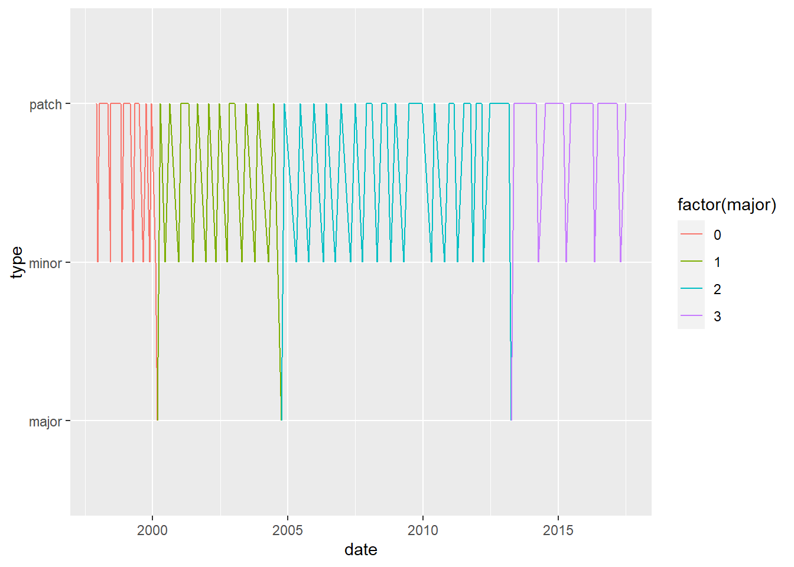

Yap’s R Cookbook
Hello, Website!
keyboard shortcuts
control-shift-m is the keyboard shortcuts for ‘Pipe.’

Creating my First Package
Dates
Use str() to look at the structure of x and confirm it is just a character string
Convert x to a date using as.Date()
Use str() to look at the structore of x_date and confirm it is a Date
Now, use as.Date() to store the date April 10, 2014# The date R 4.0.0 was released
x <- "2020-04-24"
# Examine structure of x
str(x)## chr "2020-04-24"# Use as.Date() to interpret x as a date
x_date <- as.Date(x)
# Examine structure of x_date
str(x_date)## Date[1:1], format: "2020-04-24"Instructions:
Use read_csv() to read in the CSV file rversions.csv as releases
Use str() to examine the structure of the date column
anytime package is loaded and created an object called sep_10_2009. Use the anytime() function to parse sep_10_2009
# Load the readr package
library(readr)
# Use read_csv() to import rversions.csv
releases <- read_csv("https://assets.datacamp.com/production/course_5348/datasets/rversions.csv")## Parsed with column specification:
## cols(
## major = col_double(),
## minor = col_double(),
## patch = col_double(),
## date = col_date(format = ""),
## datetime = col_datetime(format = ""),
## time = col_time(format = ""),
## type = col_character()
## )# Examine the structure of the date column
str(releases$date) ## Date[1:105], format: "1997-12-04" "1997-12-21" "1998-01-10" "1998-03-14" "1998-05-02" ...Plotting
Instructions:
Make a plot of releases over time by setting the x argument of the aes() function to the date column
Zoom in to the period from 2010 to 2014 by specifying limits from “2010-01-01” to “2014-01-01”. (Note: These strings need to be wrapped in as.Date() to be interpreted as Date objects)
Adjust the axis labeling by specifying date_breaks of “10 years”and date_labels of “%Y”library(ggplot2)
# Set the x axis to the date column
ggplot(releases, aes(x = date, y = type)) +
geom_line(aes(group = 1, color = factor(major)))